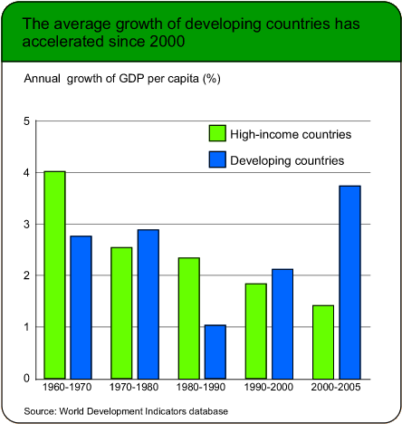
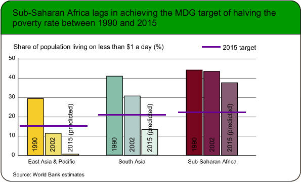

Clustering the bars
On the previous page, the diagram that was used to compare the groups was essentially a collection of separate bar charts that were all drawn to the same scale — either frequency or percentage.
When drawn in this way, the bars corresponding to any particular category of interest (e.g. 'killed' in the road injury exampe) are widely separated in the diagram, making comparisons harder. An alternative display uses the same bars, but clusters them by the categories, rather than by groups. This type of clustered bar chart makes it easier to spot subtle differences between the groups.
Where do nurses work?
Colleges that train nurses need to know the types of work that the nurses will eventually perform, in order to give them appropriate training. One aspect of this is the mix of work settings that will eventually employ these nurses.
The diagram below shows the work settings of all enrolled nurses in Australia in 1993, 1996 and 1999.
Although the distribution of workplaces within each year is clearly shown when the bars are clustered by year, it is harder to assess any trends over the six-year period since the three bar charts all have a similar shape.
Select the option Workplace from the pop-up menu to cluster the bars by workplace. From this diagram it is easier to see the more subtle changes in distribution over the period.
When reading clustered bar charts of percentages, always think carefully about how the bars are clustered. Do they add to 100% in each cluster or over the same positions in different clusters?
Third world development
The two clustered bar charts below were both printed in a publication about global development.


Although both diagrams relate to data about different groups of countries in different years, observe that the bars have been clustered differently. In practice, you should try both clusterings and pick the one that most clearly communicates the message that you intend to make.